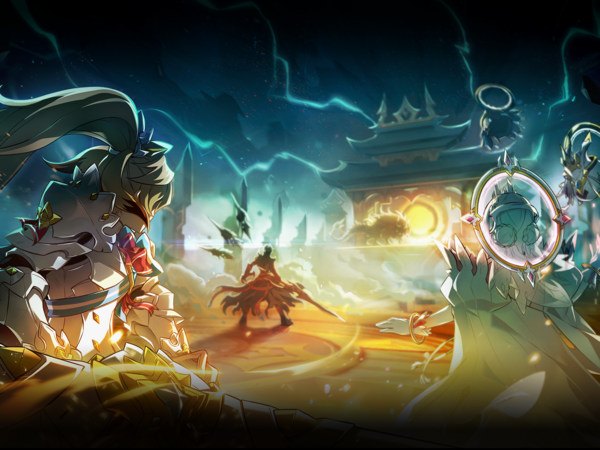

PVE GUIDE
ROSSO
12- 6 GUIDE BY KE:
Phase 1:
red : special skill
grey : command and acitve
Phase 2:
Mục tiêu : Hạ máu boss càng nhanh càng tốt để nó cast OTK ( 52 35 17 ), hạ càng nhanh mình càng đỡ phải làm mấy thứ linh tinh bên dưới
Yêu cầu : mang wind orb hoặc liquid ( hoặc cả 2 nếu có thể)
Skill boss :
- Aiming : tự né tự cứu mình ( chắc mọi ng biết cách r ) và tránh xa team ra , càng xa càng tốt, khuyến khích lên trần.
- Iframe : mè khỏi nói đi, nhưng mà tránh trường hợp bị mắt con chiếu, dính hit stun thì mana break
- Spike : tự né
Skill mắt con :
- Aiming : tránh đc bn thì tránh
- Spike : tự né , nó thường dùng cùng lúc vs boss
- Healing : đập đập và đập
Tiến hành :
B1 : giết sạch mắt con
B2 : dmg boss càng nhanh càng tốt tới 52
B3 : phá OTK r dmg tiếp đến khi nó summon
B4 : tập trung giết con mắt dưới cùng bên phải ( thằng nào bị ngắm thì chạy đi, để team tập trung dmg ) r vào chịch thẳng boss tới 35
B5 : quay lại B3 đến khi boss chết
Phase 3:
- Xoay kim: Boss teleport ra giữa map và bắt đầu xoay theo hướng bất kỳ, dưới 70 bar hp thì boss có thể xoay ngược.
- Nên chạy ở khoảng giữa 2 kim không nên chạy sát quá.
- Khi boss teleport nó sẽ sử dụng 1 trong 3 skill sau:
-Laser: Sau vài giây nó sẽ bắn laser cực mạnh.
- Timing để né.
- Cage(prison): Như phase 1 nếu màu đỏ thì xài special skill xám thì xài active hoặc command.
- Cả team cần tập trung lại đứng gần nhau nếu boss xài cage trước thì phá xong dmg boss, nếu boss sử dụng laser thì có thể đứng dưới boss deal dmg, người bị boss aim cố gắng đừng hướng laser về phía team sau khi laser bắn thì regroup thật nhanh vì có thể nó sẽ sử dụng cage.
- Spike: Như phase 2 nhưng mạnh hơn nhiều.
- Chạy ra xa hoặc iframe để né.
- Spike pillar: Boss rơi vào trạng thái phản dmg và sử dụng spike pillar liên tục. Lần đầu sử dụng khi rơi xuống dưới 60 bar, khi boss xài skill này màn hình sẽ zoom out ra 1 khoảng để dễ né hơn. Nếu boss trúng pillar do nó tự tạo ra 5 lần thì sẽ bị stun một thời gian dài.
- Xuống gần 60 bar thì tạm thời ngưng đánh chờ nó xài laser thì có thể kéo nó xuống dưới 60 để tránh bị phản dmg (tháo pet ra khi nó gần xuống 60)
Màu tròn xanh là vị trí của boss, cả team phải đứng ở vị trí 1 sau đó né sang vị trí 2 và quay về 1 để điều chỉnh pillar stun boss, xem hình bên dưới để dễ hình dung hơn.
Vì thường team freeze tốt với đủ dps thì vào phase 3 tụi nó sẽ đập chết luôn boss nếu không đủ dmg thì quay lại làm theo hết mech đã chỉ dẫn
- Title recommend:
- Drabaki: Rút máu boss nhanh mỗi 20s nếu bạn thiếu dmg.
- 12-2, Eclipse: Bạn bị đồng đội bóp vì laser, bạn bị cả team #$!@!#!@ vì hồi hp cho boss đến ngay với chúng tôi sản phẩm 2 bông hoa cùng ** ở giữa, 2 mạng chưa bao giờ là thừa.
- Một số title tăng dmg khác: dmg on boss, all skill dmg, henir, etc...
- Elixir recommend:
- Giant: tăng dmg cho đa số char sử dụng, nhược điểm người to dễ trúng skill hơn.
- Rosso's calamity wheel: xài tốt nếu bạn sử dụng title drabaki để deal dmg, nhược điểm có thể bị phản dmg nếu ko cẩn thận lúc boss xài pillar.
- Ventus's Wings: chạy cao nhảy nhanh.
- Adapt: Khỏe hơn trâu hơn
Raid Guide 12-7 By Saint:
Phase 1:- Trên 70 bar: - Boss skill laser 1 dải: Boss ngẩng đầu và mắt sáng lên, lúc nó cúi xuống và chiếu laser thì lập tức iframe.
- Boss skill hand slam + thorn: nhận diện boss cúi thấp xuống 1 lúc và ngẩng lên cao thì hú.
- Nếu team ko có cent hoặc ai ko có super armor, mang stone apple.
- Nếu bạn là Cent thì bạn phải dùng Tactical Field vào góc ngay trước khi nó dùng hand slam rồi chạy tới đó.
- Đổi bên sau mỗi lần boss xài hand slam, tức là nếu bắt đầu bên trái thì lần tiếp theo sẽ qua bên phải, sau đó nữa là trái. Đứng càng gần góc càng tốt, nhưng cẩn thận để ko bị trượt xuống vực, nhất là những ai nốc ventus. Thấy aim màu đỏ là chạy vào giữa ngay lập tức để né.
- Luật ko áp dụng vs những ai biết bay.
Từ 70 bar: Touhou bong bóng > Đập tay và gai chọc lên và cứ thế theo vòng lặp
- Touhou bubble: đứng vào giữa màn hình, ko khuyến khích dùng giant elixir để tăng hitbox bản thân, khi bóng nổi lên thì di chuyển chậm qua trái né.
- Sau touhou bubble là tới lượt hand slam, nên đứng sang bên chuẩn bị để nhảy qua góc sớm nhất.
_NOTE: P2 + P3 cực kì cần Rosso wheel or Denif. Để vừa iframe vừa phá gai trắng đc. Hoặc tự cứu bản thân + đồng đội kế bên đc. Sẽ giúp phá cage nhanh hơn. Tùy vào tài chính mà chọn Rosso hoặc Denif. Nhưng ưu tiên Rosso hơn
Phase 2:
Chỉ có 2 boss attack cần phải nhớ: cột lửa và touhou laser
- Team đứng ở giữa map, tầng dưới cùng, càng dính lấy nhau càng tốt.
- Team có Cent thì Cent giữ TF 24/24. Ko có thì ăn stone apple để ko bị boss đạp khỏi map.
- Sẽ có mọc spikes như 12-6-1, ko phải quan tâm spike ở đoạn này cho lắm, nhưng nó chọc vào người thì vẫn đau và phải cẩn thận. (nếu dính hit của boss mà ko có TF hoặc stone apple thì mấy cái spikes sau lưng có thể cứu dc vài mạng người)
- Cột lửa: dấu hiệu là màn hình zoom out. Việc phải làm là chạy ra góc (ai gần góc nào chạy ra góc đấy, cẩn thận trượt chân), đợi nó aim xong quay về giữa.
- Touhou Laser: dấu hiệu là màn hình zoom in vào mặt rosso, và mắt con rosso lóe lên. Việc phải làm là chọn hàng ngang nào mà nó ko aim laser và trèo lên/nhảy xuống, liên tục 4 lần. (ko áp dụng vs ai biết bay).
- Khi skill touhou laser thì platform sẽ phục hồi như dạng ban đầu, kể cả sau khi bị cột lửa ăn hết trước đấy.
- Boss frame luôn luôn sẽ là cột lửa trước, sau đó đến touhou laser và cứ thế lặp lại.
- Luôn luôn đứng ở giữa, tầng dưới cùng.
Phase 3:
Dính lửa của boss là ăn debuff heal boss y như 12-5-2. Công việc là deal dmg vào boss tối đa trong khi để ý debuff, spikes và cages.
- Đầu tiên recommend elixir rosso, title drabaki nếu team cần thêm dmg, hơn là 2 mạng (áp dụng vs team pro nhé ko phải team vn hiện tại)
- Đứng vào giữa, tầng phía trên cùng ( ko phải 2 góc trên cùng bên ngoài mà trên cùng ở giữa, như hình). Muốn biết tại sao thì nếu đứng phía trên lửa sẽ ko xuyên dc platform, và dễ né gai chọc lên hơn.
- Luôn luôn đứng sát rạt nhau vì lý do ăn cage liên tục giống như 12-6-3.
- Những class Cent, DaB, CU, hoặc MN, con nào active tốt nói chung thì CỨ THẤY SPIKE MỌC LÀ TẬP TRUNG CLEAR SPIKE TRƯỚC, CÀNG NHANH CÀNG TỐT. Ko phải vì khó nhìn hay hụt dmg mà do gai chọc lên ko có đường chạy.
- Gai chọc lên: như 12-6-3 đoạn dưới 60 bar, rosso bay lên cao, screen zoom out, và nó sẽ aim bất kì ai trong pt. Gai phá mọi platform trừ vị trí giữa, nên cả team đứng giữa map mọi lúc để cứu platform. Để né gai an toàn, cần làm là nhảy xuống tầng dưới cùng > đợi nó aim đỏ lên > di chuyển phải/trái > né xong về vị trí cũ.
- Cage/ Prisons: giống như 12-6 nhưng HP thấp hơn, thỉnh thoảng nó thích thì khóa lại cái nên có ai ko đứng trong team chết ráng chịu
Dưới 30 bar: Boss heal khỏe hơn và HH vô dụng trong khoảng 20-30 bar HP
THƯỜNG thì nó sẽ đánh theo thứ tự sau:
- Gai chọc
- Cage
- Vung lưỡi hái spawn gai trắng, đỏ và lửa debuff
- Teleport random và vung lửa debuff
- Lại nhảy lên cao và chọc gai
Dưới 10 bar: nhiều spike, gai chọc và nhiều cage hơn, tháo HH để phá cage, còn muốn go pro thì đeo HH sau khi phá cage xong và tháo ra khi nó dùng skill gai chọc lên.
Níu cảm thấy mịt mỏi thì xem clip này luôn cho lẹ !!!!
video của NGÀI DŨNGGGGG!!!
BERTHE
TROSH
- Trosh's Nest còn hay gọi là 13-3 là một dungeon trong vùng Rigomor:
- Map yêu cầu lv.99 với 550,000 CP để vào, trosh là map được đa số người chơi chọn làm map farm vì:
- Làm Daily Rigomor
- Farm ERP ( lượng exp nhận được nhiều thứ 2 sau 16-2 )
- Farm ED ( thông qua bán vật phẩm rơi ra từ map )
- Dungeon gồm có tổng cộng 7 stage tính luôn cả boss
Có 3 loại mods:
1. Ốc ngồi đáy giếng (Armadulla):
Rút lui vào trong vỏ của nó, tăng cường phòng thủ trước khi lao về phía trước, gây sát thương lên bất cứ thứ gì cản đường nó. Nên đánh phía sau lưng để gây thêm dmg.
2. Sứa ẩn có lúc hiện ( Seren ):
Biến mất và xuất hiện lại bên cạnh mục tiêu. Hút người chơi vào xoáy nước trước mặt và ngăn cản việc sử dụng kỹ năng trong khi bị hút.
3. Ngựa bạch ngọc ( Homon ):
Lùi lại và lao mình, nó có thể nhắm đòn tấn công này, điều chỉnh góc dựa trên những gì nó đang nhắm tới.
Và cuối cùng là BOSS:
Gồm có 3 con xuất hiện ở góc trái, phải, trên của stage là một sinh vật côn trùng có cánh mang một số loại thiết bị đồng hồ.
Sau đây là một số tips để bạn có thể đơm con boss này:
.png)
như các bạn đã thấy khi vào stage boss sẽ có 2 bên lốc xoáy, BÊN TRÁI dành cho người có nhiệm vụ dẫn boss về "vị trí đẹp":
và BÊN PHẢI là dành cho những người còn lại trong team, ở bên này các bạn chờ khoảng chừng là 2s và di chuyển lên "vị trí đẹp":
Vậy "vị trí đẹp" là gì
là vị trí để thuận tiện cho việc tiêu diệt cùng lúc cả 3 con boss:
và một số thứ cần thiết dễ giết boss 1 cách dễ dàng hơn:
1. Head Hunter (HH):
Giảm Sức mạnh phys/mag tổng, nhưng bù lại nó sẽ tăng % dmg to boss lên theo từng cấp bậc của HH. Rare -18% phys/mag +40% dmg to boss, Elite -20% phys/mag +60% dmg to boss, Unique -24% phys/mag +80% dmg to boss.
2. Water orb:
Phạm vi tấn công 7m, Bán kính sát thương 7m, Đóng băng trong vòng 4 giây và Thời gian hồi chiêu là 30 giây.
3. Wind orb:
Phạm vi tấn công 7m, Bán kính sát thương 7m, Giảm 50% phòng thủ của mục tiêu và Thời gian hồi chiêu là 30 giây.
sau khi đã vào "vị tí đẹp" và có những thứ trên thì việc bạn cần làm là chú ý mini-map, khi thấy 3 con boss đã tụ lại như hình:
thì hãy lập tức ném "Warter orb" và "Wind orb" về phần orb vì có thời gian hồi là 30 giây thế nên bạn hãy chia cho 2 người trong team cùng làm, và khi 2 orb có tác dụng thì việc bạn cần làm là hãy bấm nát những skill mạnh nhất mà bạn có !!!